Introduction
This project documents the research, design, and prototyping process for UNT Navigator, a mobile application conceived to address the navigational and scheduling challenges faced by students at the University of North Texas.
Project Goal
To design an intuitive, integrated mobile solution that helps UNT students easily find campus locations, navigate to classes via Canvas integration, and discover campus events and points of interest.
Team & Roles
- Rowland Foster - UX Design Project Group Member
- Abyan Huq - UX Design Project Group Member
- Rishav Dahal - UX Design Project Group Member
Duration
14 Weeks
Tools
- Figma
The Problem
Navigating a large university campus like UNT presents significant hurdles, particularly for new students. Current methods often involve static maps, general-purpose navigation apps lacking detail, or relying on asking others, leading to:
- Stress and anxiety about finding unfamiliar locations on campus
- Tardiness for classes and appointments
- Difficulty discovering campus resources and events
Our initial research confirmed these pain points, especially among new UNT students.

The Solution: UNT Navigator
We proposed UNT Navigator, a dedicated mobile application designed to be a centralized hub for campus life, offering:
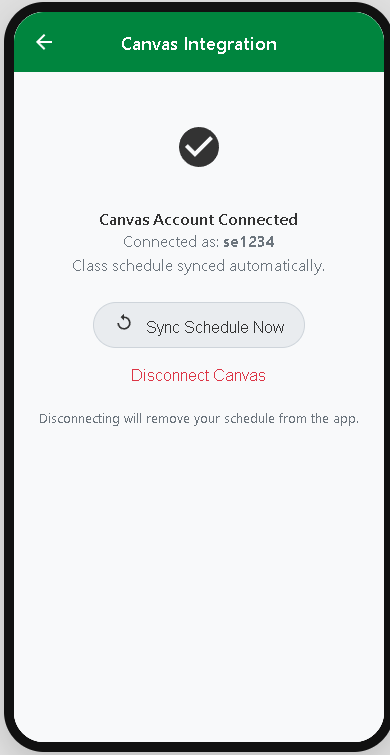
Canvas Integration
Automatic class schedule import links classes directly to map locations.
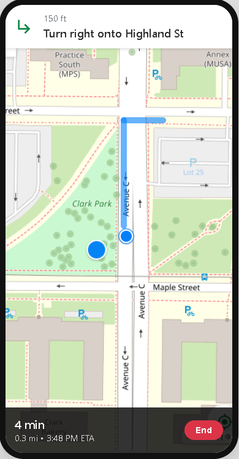
Campus Navigation
Accurate, turn-by-turn walking directions optimized for the UNT campus.
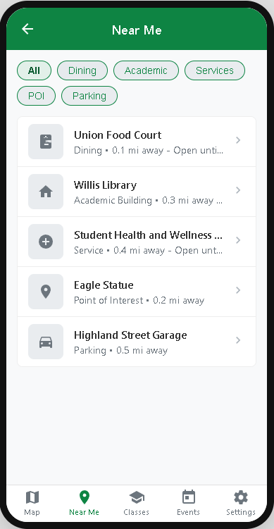
"Near Me" Discovery
Find nearby buildings, dining, study spots, and points of interest with filters.
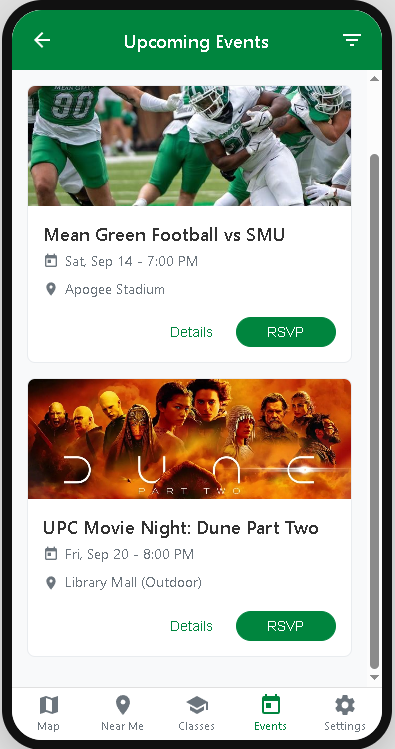
Events Hub
Discover campus events, RSVP, and add them to your calendar.
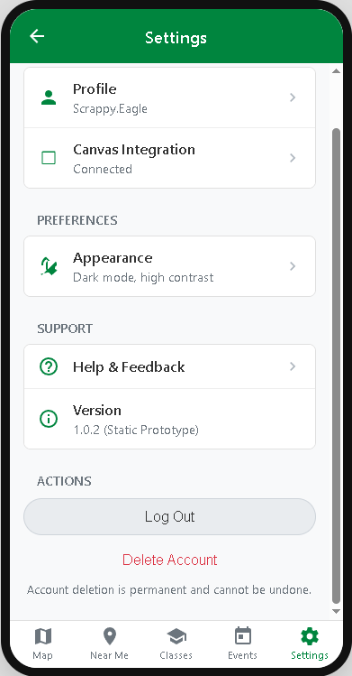
Customization
Manage profile, Canvas connection, and appearance (Light/Dark/High Contrast modes).
Research & Discovery
To ground our design decisions, we conducted user interviews with UNT students. Key questions explored current navigation habits, scheduling methods, pain points, and desired features.
Key Findings
- Strong desire for schedule integration with navigation.
- Frustration with lack of detail in existing map apps for campus locations.
- Difficulty finding specific rooms within buildings.
- Interest in a centralized place for campus event information.

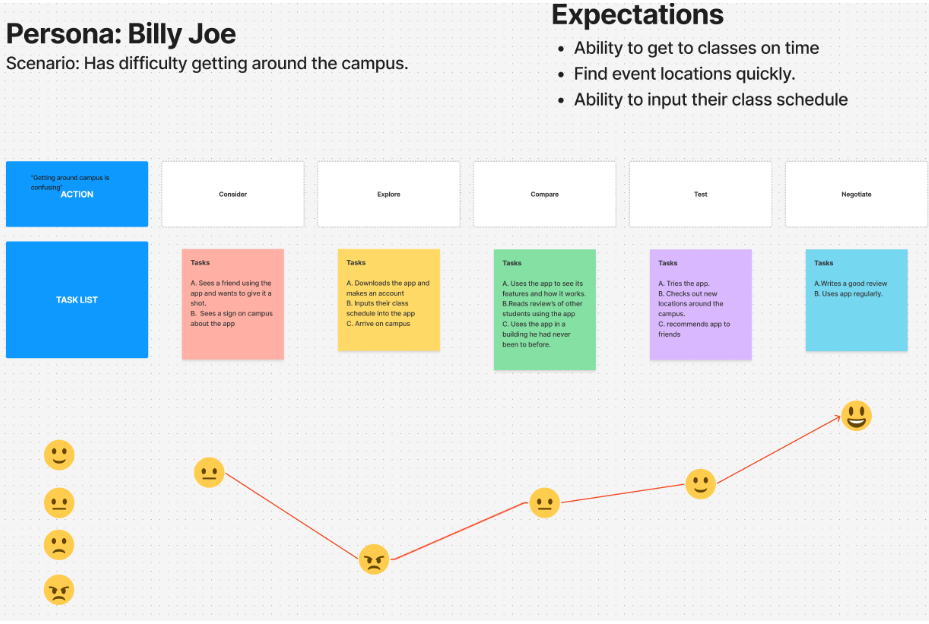
Design Process
Our process involved several stages, moving from broad ideas to refined designs:
1. Ideation & Sketching (Crazy 8s)
We used rapid sketching exercises to explore various layout concepts for key screens. We then voted on which layouts we liked best.


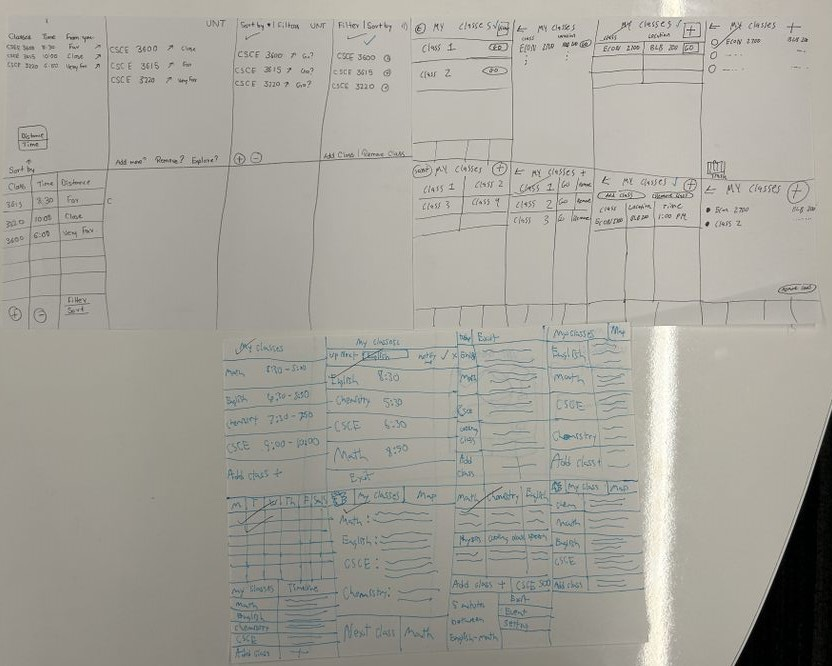
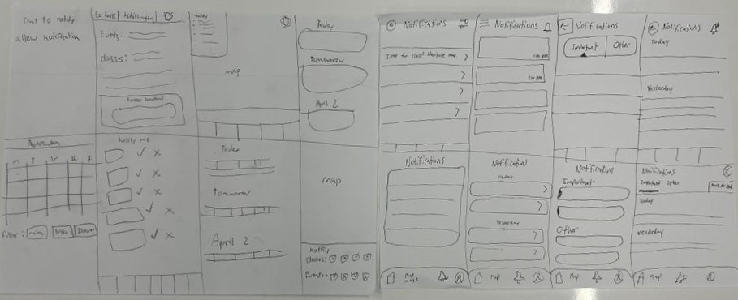
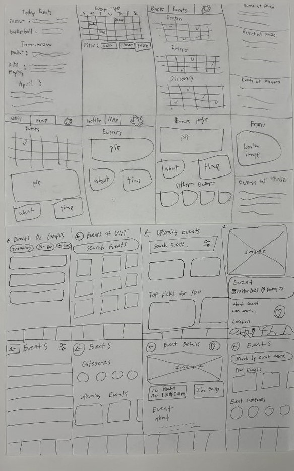
Examples of Crazy 8 sketches exploring different UI solutions.
2. Information Architecture & User Flows
We defined the app's structure and mapped out primary user journeys, like finding and navigating to a class.
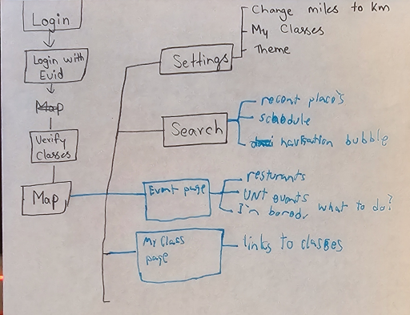
3. Low-Fidelity Wireframing
We created basic wireframes in Figma to establish layout and core functionality without focusing on visual details.


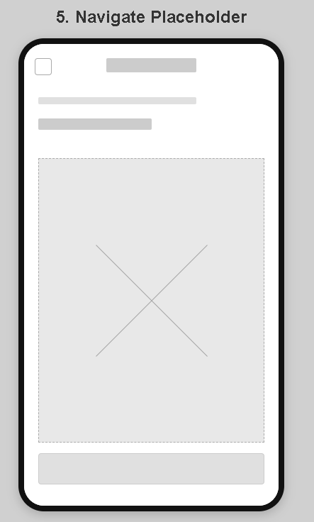

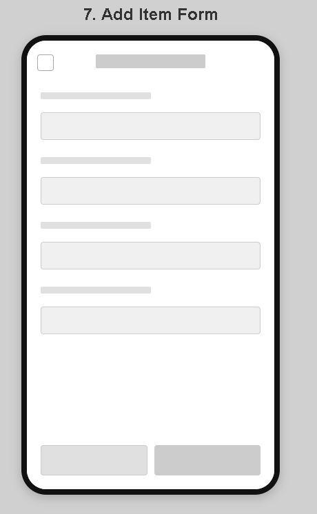

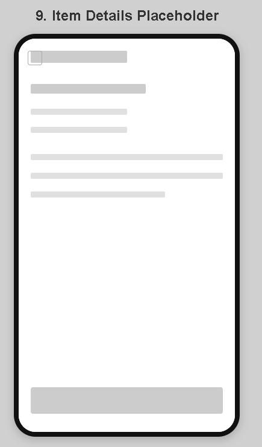
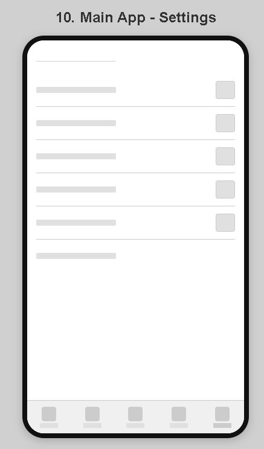
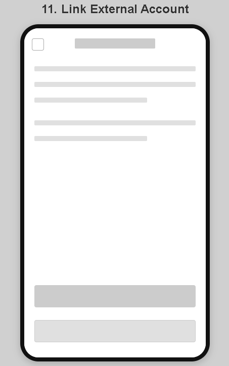
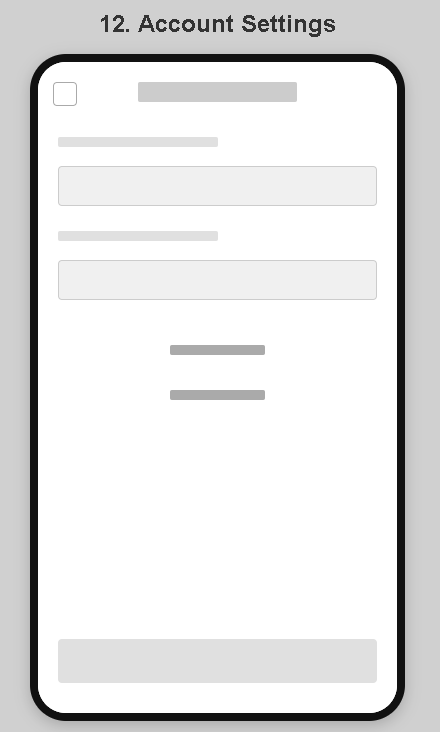
4. Design System & Branding
A system was developed using UNT's colors (green, white) combined with compatible blacks and greys for contrast, prioritizing clarity and readability.
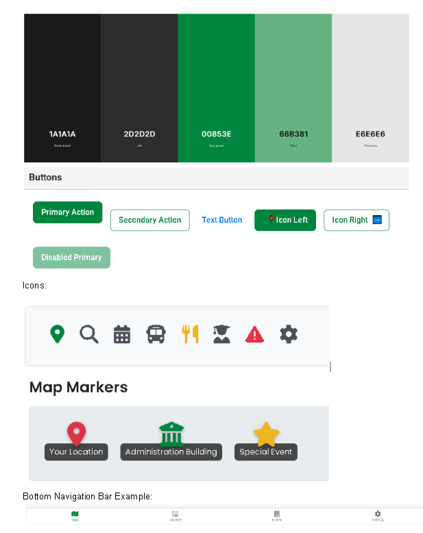
5. High-Fidelity Prototyping
Wireframes were translated into detailed mockups incorporating the design system, ready for testing.
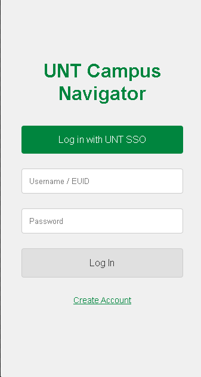
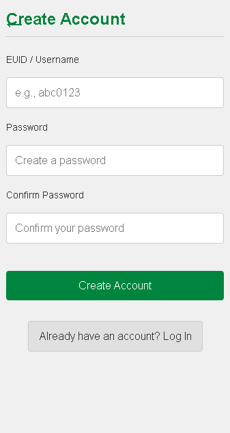
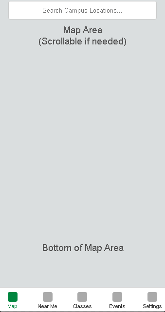
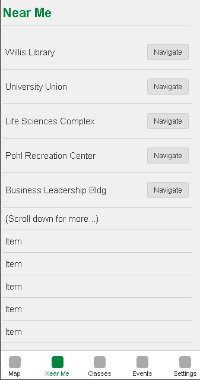

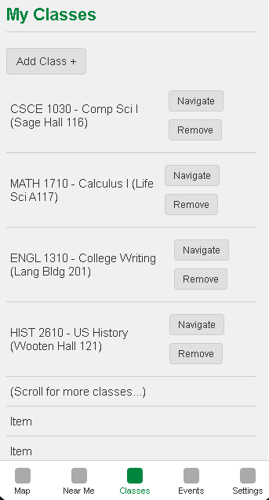

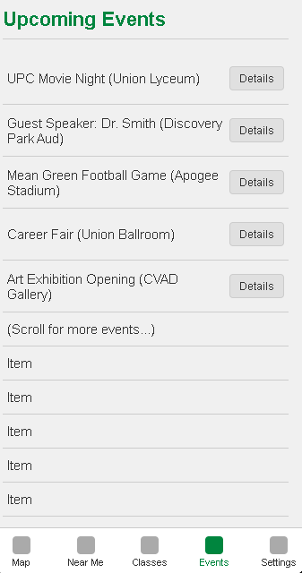

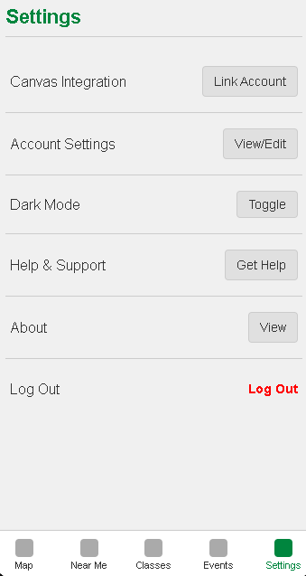


Usability Testing & Iteration
We conducted usability tests with UNT students using the high-fidelity prototype. Participants were asked to complete key tasks while thinking aloud.
💡 Key Testing Insights 💡
- While the concept was well-received, some users were initially unsure if the app was solely for classes or broader campus use. (Action: Improved onboarding clarity).
- The Canvas integration was highly valued, especially by newer students.
- Users requested more granular filters for "Near Me" and "Events". (Action: Added more filter options).
- Some map touch targets needed adjustment for easier interaction. (Action: Increased tap area size).
- Minor confusion around specific iconography. (Action: Revised icons for clarity).
Notable Iterations (Example)
Based on feedback, we refined designs. For example, filters were added to the 'Near Me' feature:
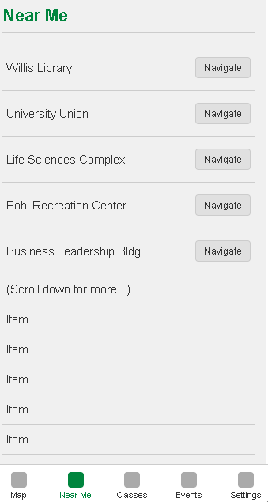

Final Product
The iterative design process led to the final prototype of UNT Navigator, incorporating user feedback and refinements.
Key Feature Flows (Final Design)
Login
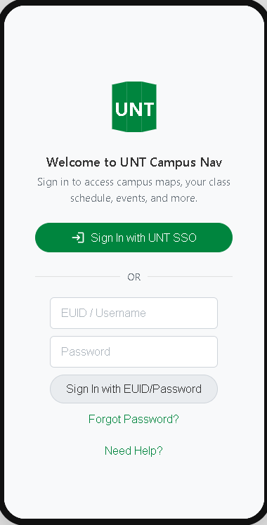
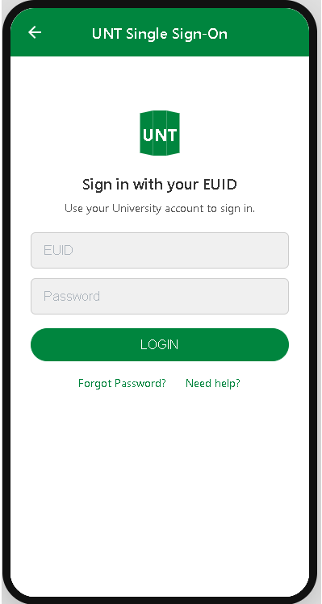

Finding & Navigating to a Class
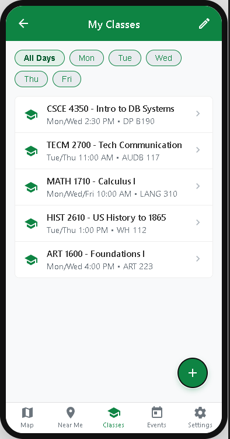


Using "Near Me" with Filters

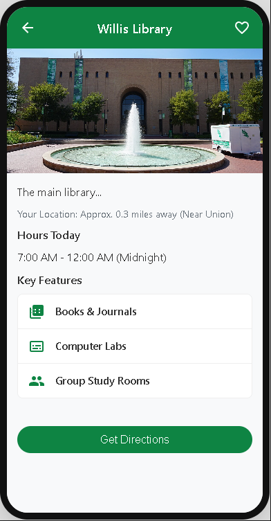

Finding Upcoming Events
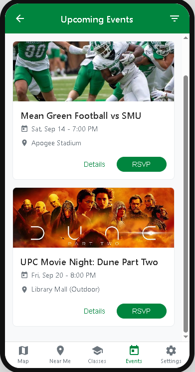


Delete Account


Reflections & Future Steps
Key Takeaways
- The critical importance of early user research in defining the *right* problem to solve.
- How iterative usability testing directly informs design improvements.
- The value of a design system for maintaining consistency and efficiency.
Future Steps
- Developing functional indoor mapping for key buildings.
- Integrating real-time UNT bus tracking data.
- Adding social features like friend location sharing (opt-in).